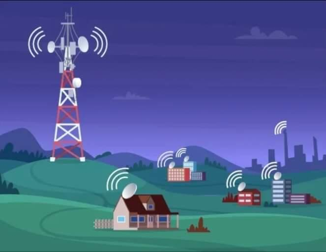

Como funciona a transmissão de ondas de rádio?
Em uma transmissão radiofônica, as ondas sonoras produzidas por vozes, instrumentos musicais ou
qualquer outro aparelho são captadas por microfones. A vibração mecânica do diafragma do microfone gera uma
corrente elétrica que varia de acordo com a frequência e a amplitude da onda sonora.
